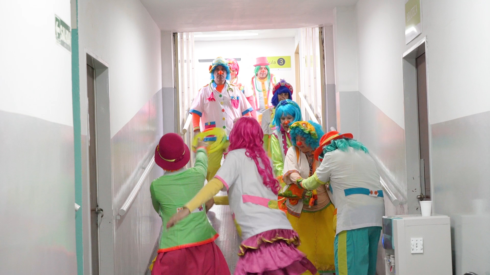
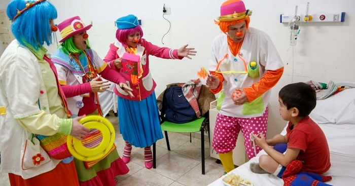

Hecha un vistazo y mira todo lo que podemos hacer los PayaMêdicos
Te compartimos a una de nuestras Payas, haciendo burbujas en un payapaseo
La asociación ofrece una formación de payamédico durante un año, compuesta por la parte teatral o PAYATEATRALIDAD, donde se aprende la técnica del payaso teatral; y una parte teórica de la formación, denominada PAYAMEDICINA abordando temas como la psicología, infectología, neurociencias, tanatología, filosofía, juego, patologías, ética, bioseguridad, etc.
Los payas coparon hasta las escaleras del Hospi, mira...
Los payas siempre intentando sacar sonrisas
Sabias que los payas, solicitamos ni bien llegamos al hospi, el parte medico de cada paciente, para poder ser empaticos con su situacion y cuidar al máximo al produciente, que seria el paciente, pero nosotros le decimos produciente, porque sabemos que cuando una persona esta enferma, no esta totalmente enferma, es decir, el 100% de su cuerpo no esta padeciendo una enfermedad, por eso mismo, hay una parte del cuerpo que siempre esta sana, y creemos absolutamente que la parte sana puede producir que lo que no esta sano...comience a sanar, por eso intentamos llevar sonrisas pero principalmente sacarle una sonrisa a toda persona que se encuentre padeciendo alguna enfermedad, como en la siguiente foto que nos encontramos con un produciente de pediatria.
